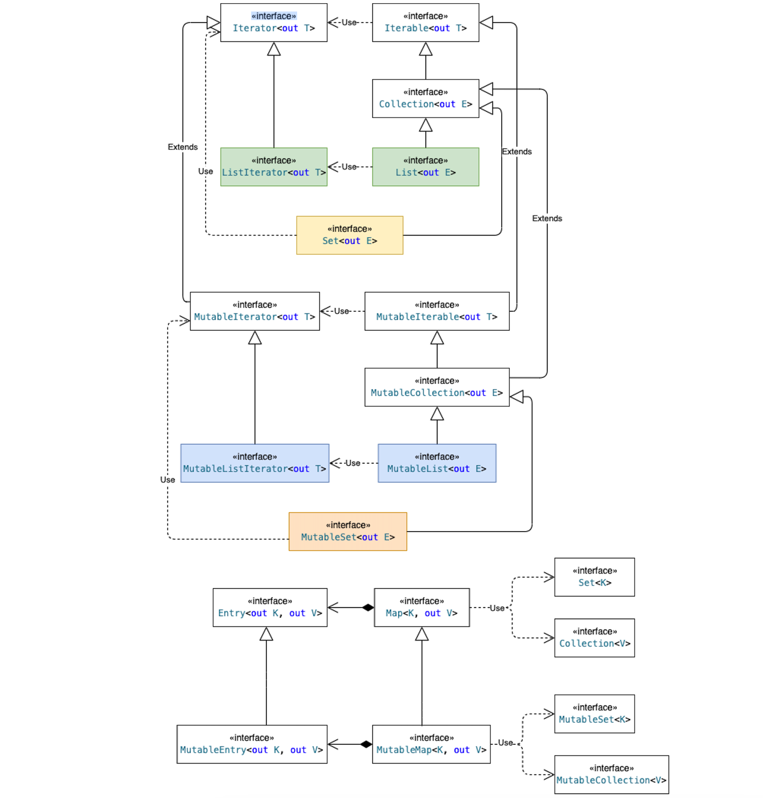

6. 集合类
Kotlin的集合类分为可变集合类(Mutable)与不可变集合类(Immutable:只读、可序列化)。 主要有3种: list、set 和 map。特别的空集合对象是全局单例的。

6.1 List
- 创建与转换:
listOf()、mutableListOf()、arrayListOf()toMutableList()、toList()
- 遍历:
- 迭代器
it = list.listIterator(); for(e in list) - ForEach
l.forEach(::println)、l.forEachIndexed {i,e-> println("$i->$e")} - 求和
list.sum() 、list.sumOf {e-> 2*e}后者求 sum(f(x)) 其中 f(x)=2*x - 遍历累计
reduce() fold() foldRight()
- 迭代器
- CURD:
- 增:
add()、plus() - 删:
remove()、clear() - 改: set方法
list[0]=e - 查:
getOrNull()、elementAt()
- 增:
- 排序:
sorted() sortedDescending() reversed() sortedWith(cmp) sortedBy(f) - 按条件取元素:
- 从左向右查找
firstOrNull(predicate) - 从右向左查找
lastOrNull(predicate) - 查找唯一满足条件的元素
singleOrNull(predicate)
- 从左向右查找
- 查询元素下标:
indexOfFirst() 、indexOfLast() - 统计判断:
- 是否所有元素都不满足
list.none(predicate) - 是否存在一个元素满足
list.any(predicate) - 是否所有元素都满足
list.all(predicate) - 统计满足条件的元素数
list.count(predicate) - 判断元素是否在列表中
list.contains(ele)
- 是否所有元素都不满足
- 最值:
min/max() minWith(cmp) minOf(f) minBy(f)其中minBy(f)返回f(x)值最小时的x值 - 过滤:
- 取满足条件的一系列
take(N) takeWhile(predicate) takeLast(N) - 去掉满足条件的取补
drop(N) dropLastWhile(predicate) - 根据下标挑选
slice(idxs) - 根据条件过滤
filterTo()
- 取满足条件的一系列
- 映射:
- 根据映射关系取新集
map() 、mapNotNull() - 扁平化映射
flatMap()
- 根据映射关系取新集
- 分组:
groupBy(keyGen, valGen) - 压解:
cL=aL.zip(bL) cL.unzip().also{ aL=it.first; bL=it.second} - 拆分:
partition(predicate)依据满足与否分成2组 - 交集:
aL.retainAll{ bL.contains(it) }
// 只读、可写List创建与转换
val iList = listOf(1, 2, 3)
val mList = mutableListOf(4, 5, 6)
val list = listOf(1, 2, 3).toMutableList()
val iL = mutableListOf(4, 5, 6).toList()
// 取迭代器遍历 和 forEach遍历
val it = list.listIterator()
iList.forEach(::println)
// 遍历求值: sum reduce fold forEach
var sum = list.sum() // 元素累加和
sum = list.sumOf { e -> 2 * e } // y=f(x)=2*x的累加和，即 2 * list.sum()
sum = list.reduce { acc, e -> acc + e } // 从左向右累加，空集不抛异常用 reduceOrNull
sum = list.reduceRight { e, acc -> acc + e } // 从右向左累加
var mul = list.fold(1) { acc: Int, e: Int -> acc * e } // 从左向右累乘
mul = list.foldRight(1) { e, acc -> acc * e } // 从右向左累乘
list.forEachIndexed { index, e -> println("list[$index]=$e") } // 带索引遍历
// 增删改查: add/plus remove/clear set get
list.add(7);
list += 8 // list.plus(e)
list += 9..20 // list.plus(otherList)
list.remove(1) // return false: no ele==1
list.removeAt(4)
list.clear()
list[0] = -1 // set(i, e)
// 根据下标返回元素 elementAt() 和 get() 类似
list.elementAt(0) // 越界抛出 IndexOutOfBoundsException
list.elementAtOrNull(-1) // 越界返回 null
list.elementAtOrElse(-1, Integer::valueOf) // 越界返回 def 值, 即下标值
// 排序: sorted sortedDescending reversed
var sortedList = list.sortedDescending() // 排降序
sortedList = list.sortedWith(Int::compareTo) // 自定义比较器排序
sortedList = list.sortedBy { e -> e * e } // 比较 f(x)=x^2 对x排升序, f(x)=null时x排在最前
sortedList = list.reversed() // 列表倒序
// 取满足条件的首元素，NoSuchElementException
var target: Int? = list.first { e -> e > 100 }
target = list.firstOrNull()
// 取满足条件的尾元素，NoSuchElementException
target = list.last { e -> e > 100 }
target = list.lastOrNull { e -> e > 100 }
// 返回满足条件的唯一元素，没有或非唯一则抛异常
target = list.single { e -> e == -1 }
target = list.singleOrNull()
// 返回指定元素的下标，没有返回 -1
var idx = list.indexOf(1)
idx = list.indexOfFirst { e -> e and 1 == 0 }
idx = list.lastIndexOf(1)
idx = list.indexOfLast { e -> e and 1 == 0 }
// 统计判断: any all none count contains
res = list.all { e -> e and 1 == 0 } // 是否所有元素都是偶数
res = list.any { e -> e and 1 == 0 } // 是否有元素是偶数
res = list.none { e -> e and 1 == 0 } // 是否没有元素是偶数
var cnt = list.count { e -> e and 1 == 0 } // 统计偶数个数
var res = listOf(1, 2, 3).contains(4) // 判断是否包含某元素
// 求最值: min max
var minX = list.minWith(Comparable<Int>::compareTo) // 比较算法同list.min()，但空集会抛异常
var minY = list.minOf { e -> e * e } // y = f(x) = x^2，支持自定义f(x)比较器 minOfWith(cmp, slc)
minX = list.minBy { e -> e * e } // 比较y=f(x)返回x，即求x令f(x)值最小
list.maxWithOrNull(Int::compareTo)
list.maxOfWithOrNull(Int::compareTo) { e -> e * e }
list.maxByOrNull { e -> e * e }
// 过滤: take drop slice filter
val topN = list.take(5) // 取出前N个 list.takeLast(n)
list.takeWhile { e -> e and 1 == 0 } // 从前向后取，遇到不满足条件元素就停止 list.takeLastWhile()
var bottom = list.drop(5) // 去掉前N个 list.dropLast(n)
bottom = list.dropWhile { e -> e and 1 == 0 } // 从前向后丢弃直到遇到不满足条件元素 list.dropLastWhile()
val evenEleList = list.slice(0..list.size step 2) // 获取偶数下标元素
val filtered = list.filterIsInstanceTo(mutableListOf<Int>())
list.filterTo(filtered) { e -> e and 1 == 0 }
val notNullFilter = listOf<String?>("1", null, "2").filterNotNull() // 去除结果中的Null元素
// 映射: map flatMap
var mapList = list.map { e -> "$e" } // 做一次映射转换，得到新的List
mapList = mapList.mapIndexedNotNull { i, e -> if (e.isBlank()) null else "$i->$e" } // 去掉映射过程中的null结果
list.mapNotNull { e -> listOf(e - 1, e) } // [1,2,3] -> [[0,1], [1,2], [2,3]]
list.flatMap { e -> listOf(e - 1, e) } // [1,2,3] -> [0,1, 1,2, 2,3] 扁平化结果
// 分组: groupBy
val groups = list.groupBy({ e -> e.hashCode() }, { e -> "$e" }) // 分组后得到 Map<K, List<E>>
val gCnt = list.groupingBy { e -> e % 5 }.eachCount() // 得到各组的统计数 Map<K, Int>
// 压缩/解压、拆分: zip unzip partition
var xList = listOf(1, 2, 3, 4)
var yList = listOf("a", "b", "c")
val xy: List<Pair<Int, String>> = xList.zip(yList) // 压缩 eX to eY 构成新的List, len=min(lenA, lenB)
xy.unzip().also { xList = it.first; yList = it.second } // 解压缩取新的List
(1..10).toList().partition { e -> e and 1 == 0 }.also { //partition拆分List
it.first.forEach(::println) // true: even list
it.second.forEach(::println) // false: odd list
}
// 取集合交集
val aList = mutableListOf(1, 2, 3, 4, 5)
val bList = mutableListOf(1, 3, 5, 7, 9)
aList.retainAll { return@retainAll bList.contains(it) }
aList.forEach(::println)
6.2 Set
Set和List一样都继承自Collection，List中继承自Collection的函数同样适用于Set。
- 创建:
- 不可变集:
setOf() - LinkedHashSet:
mutableSetOf() 、linkedSetOf() - HashSet:
hashSetOf() - TreeSet:
sortedSetOf() - Set会自动去重:
Iterable<T>.toSet()
- 不可变集:
- 运算:
- 合并:
plus()即set + set2/ele - 移除:
minus()即set - set2/ele
- 合并:
val iSet = setOf(1, 2, 3, 4)
val mSet = mutableSetOf(5, 6, 7)
mSet += iSet + 9 - 4
6.3 Map
Map没有继承Collection，仅对Java的Map做了一些拓展。
注: HashMap允许Null值Null键；LinkedHashMa的Entry保持着添加时的顺序
- 创建与转换:
- 不可变:
mapOf() - LinkedHashMap:
mutableMapOf() 、linkedMapOf() - HashMap:
hashMapOf() - TreeMap:
sortedMapOf() - 可写性转换:
iMap.toMutableMap() 、map.toMap() - Pair集合转Map:
Iterable<Pair<K, V>>.toMap()
- 不可变:
- 遍历:
- 迭代器:
for(entry in map.entries) - Entry.component操作符:
for((k,v) in map)
- 迭代器:
- 读取:
- 是否包含:
map.contians(k) - get方法:
map[k]不存在时返回Null map.getValue(k)不存在时抛异常- 带默认值:
getOrDefault() getOrElse() getOrPut()
- 是否包含:
- 写入:
- set/put方法:
map[k] = vput方法会额外返回当前k的历史值 - plus方法:
map + (k to v) - minus方法:
map - k - 清理:
map.remove(k) map.clear()
- set/put方法:
- 过滤：
map.filter(predicate) - 映射：修改键/值
- 修改键:
map.mapKeys() - 修改值:
map.mapValues()
- 修改键:
val imap = mapOf(1 to "a", 2 to "b")
val map = imap.toMutableMap()
listOf(1 to 'A', 2 to 'B').toMap() // Pair<K, V>集合转Map
// 遍历
for (e in map.entries) { // map.entries 同 map.keys.zip(map.values)
println("${e.toPair()}") // Entry -> Pair
}
// Map.Entry<K, V>支持操作符 component1()、component2()，即支持键值对遍历
for ((k, v) in map);
// 判断是否包含
val isContain = map.contains(-1)
// 获取
map[0] // map.get(k) 元素不存在返回null
map.getValue(1) // 元素不存在抛出 NoSuchElementException
map.getOrDefault(0, "nil")
map.getOrElse(0) { "nil" }
map.getOrPut(3) { "c" }
// 添加
map[0] = "0" // map.set(k, v) 亦 map.put(k, v)
val v = map.putIfAbsent(0, "0") // 元素不存在时put
map += Pair(3, "C") // map.plus() 添加元素
// 移除
map -= 3 // map.minus() 移除元素
val lastVal = map.remove(-1)
map.clear() // 清空Map
// 过滤
var filtered = map.filter { it.value.isNotBlank() }
filtered = map.filterValues { it.isNotBlank() }
// 映射(修改key或value)
var mapped = map.mapKeys { it.key * 2 }
mapped = map.mapValues { "${it.key}#${it.value}" }